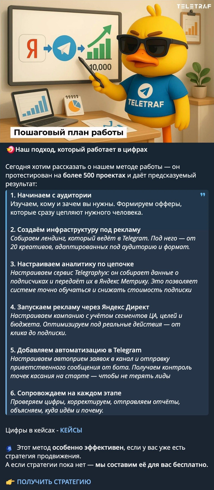
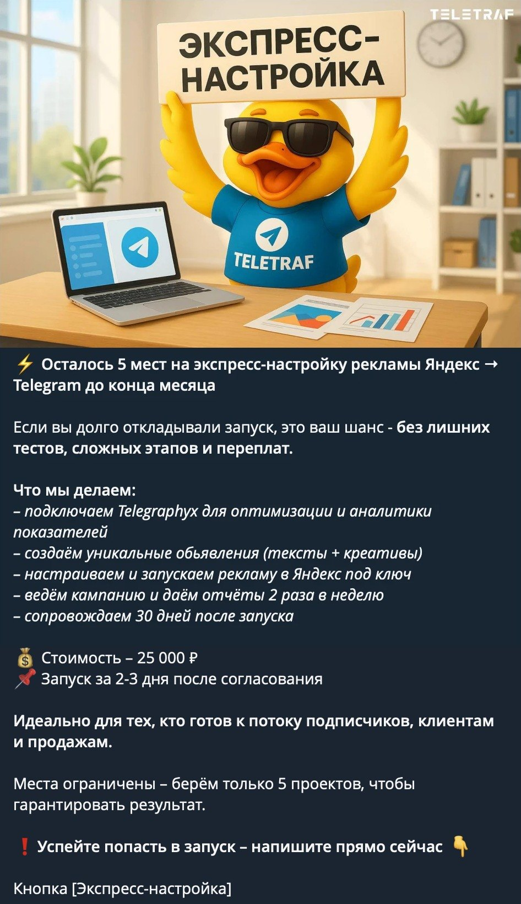

Маркетинговое агентство · контент в Telegram · короткий кейс
Канал агентства: рекордный 51 клиент за июнь–июль
Teletraf, реклама в Яндекс.Директе для Telegram-каналов · контент-маркетолог · март–август 2025
- 51 клиентна продвижении за июнь–июль, рекорд агентства
- +37%CTR нового оффера к предыдущему
- 2 450+подписчиков канала, было около 1 750
- ≈ +20%охват постов после переработки рубрик
Задача
Выстроить через контент воронку от первого касания до продажи и поднять закрываемость клиентов.
Teletraf ведёт трафик из Яндекс.Директа на Telegram-каналы клиентов. Канал агентства показывал его работу.
Трафик на канал шёл, но повода написать и начать диалог не было: человек читал, интересовался и уходил. Лид остывал в самом начале воронки.
Построение системы
- Контент
- Оффер: бесплатная консультация
- Диалог с ИИ-менеджером
- Созвон
1Контент на спрос
Контент-стратегия и контент-план с упором на формирование спроса. Две опоры: внутренняя кухня агентства и реальные кейсы клиентов. Оба формата снимают скепсис и показывают, как агентство работает.

2Оффер: бесплатная персональная консультация
Каждый пост заканчивается одним и тем же следующим шагом: разобрать свою ситуацию бесплатно. Человек получает пользу сразу и без риска, поэтому пишет сам.
3Диалог с ИИ-менеджером
Консультацию ведёт ИИ-менеджер. Для него написаны промпт с сутью агентства, логика диалога и ответы: он разбирает ситуацию клиента, даёт конкретные советы, квалифицирует и подводит к созвону. Много обращений идут параллельно, и ни один лид не ждёт ответа.
4Созвон
На созвон приходит клиент, который уже получил пользу и понимает, чем агентство ему поможет.
Рассылки по базе
Отдельно от воронки по базе подписчиков уходили рассылки с конкретным предложением.

Результат
- Рекордные 51 клиент на продвижении за июнь–июль: бесплатная консультация снизила порог входа, и в воронку пошло больше людей.
- CTR оффера с консультацией ИИ-менеджера на 37% выше, чем у предыдущего.
- Канал вырос с ~1 750 до 2 450+ подписчиков.
- Охват вырос примерно на 20%: внутренняя кухня и кейсы вовлекали заметно сильнее.